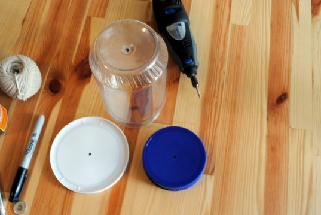
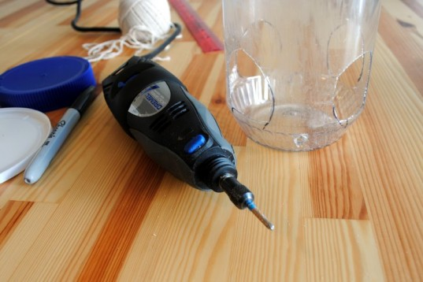
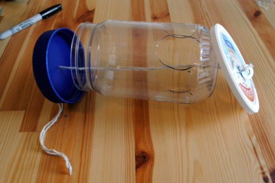
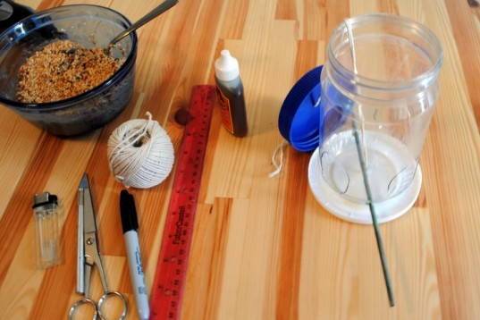

If you live in an urban apartment, finding access to outdoor space can often be a challenge. But, as other creative urban gardeners and nature lovers have shown, even the smallest of spaces can be turned in a tiny oasis. If all you have is a fire escape, hang up a few bird feeders and you'll have a flurry of feathered visitors in no time. In this simple how-to, we show you how to create a fun, recycled feeder that you can hang from your fire escape or windowsill. It costs next to nothing and anyone can do it—all you need to do is dig through your recycling bin and follow these 8 easy steps!


Step One: Gather the materials
Gather the materials you’ll need to create your recycled bird feeder. We used:
- A recycled clean plastic peanut-butter jar with a screw-on lid (any size will do)
- Lid from a large plastic yogurt container
- Dremel (you can also use a small electric drill or make do with a Swiss Army Knife, nail, or utility knife)
- Washer or nut
- Sturdy string or twine
- Scissors
- Birdseed
- Gorilla Glue or similar strong glue
- Stick (you could use a bamboo skewer or even a long pencil).

Step Two: Drill Holes for the String
Drill a small hole in the middle of the yogurt lid, the jar and the jar lid. The hole needs only be big enough to fit the string.

Step Three: Cut Feeding Holes
Next, make holes for the birds to feed through. Sketch out 3-4 holes with a marker before you begin cutting – make each hole slightly bigger than a half-dollar. Carefully cut out the holes with a utility knife and discard the plastic pieces you cut out.

Step Four: Create a perch
Using a marker and ruler, mark off two spots exactly opposite from each other slightly below your feeding holes. This is where you will thread through your stick, or feeding perch. Use your drill to make two holes that are sized correctly for the circumference of the stick you are using.
How much money can a solar roof save you in Kigali?
 Calculate My Savings!
Calculate My Savings! 
Step Five: String together your birdfeeder
Approximate a length of string that is adequate to pass through your birdfeeder with an additional 6-8 inches for hanging, then double it by folding, and then cut your doubled length of string. Folding your piece of string in half, tie the washer or nut to the bottom. Thread the folded end of your string through your birdfeeder, beginning with the yogurt lid, then go through the jar, and finally pull the string through the jar lid.

Step Six: Attach Base and Perch
Pull the string taut and place the lid on the peanut butter jar. Carefully glue the bottom of the jar to the yogurt lid. Next, thread the perch through the two holes you created and add a dab of the glue to each hole. Let the glue dry for an hour.

Step Seven: Add food to your birdfeeder
Unscrew the lid and add the birdseed of your choice. As you see here, we used storebought birdseed mixed with peanut butter. Since we knew we were going to be hanging the birdfeeder on a fire escape, we used peanut butter to keep birdseed from falling into the shared yard below our window. If you aren’t worried about seeds scattering, you can fill it will plain birdseed and the yogurt lid will catch most of the extra seeds.

Step Eight: Hang it Up!
Screw on the peanut butter jar lid, hang up your new recycled bird feeder, and wait for your new feathered friends to stop by for a snack!
We tried hanging our bird feeder in a few different locations: here, outside our window hanging from the fire escape above. We also tested the feeder on the fire escape outside our window. We finally decided on hanging the feeder outside our window so we could see the birds when they come to visit. We used an over-the-door coat hook on the top of our window to hold the feeder.


{kind=link}
{kind=link}
{kind=link}
{kind=link}
{kind=link}
{kind=link}
{kind=link}
{kind=link}